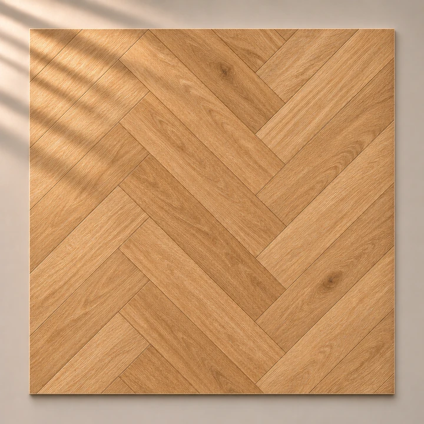
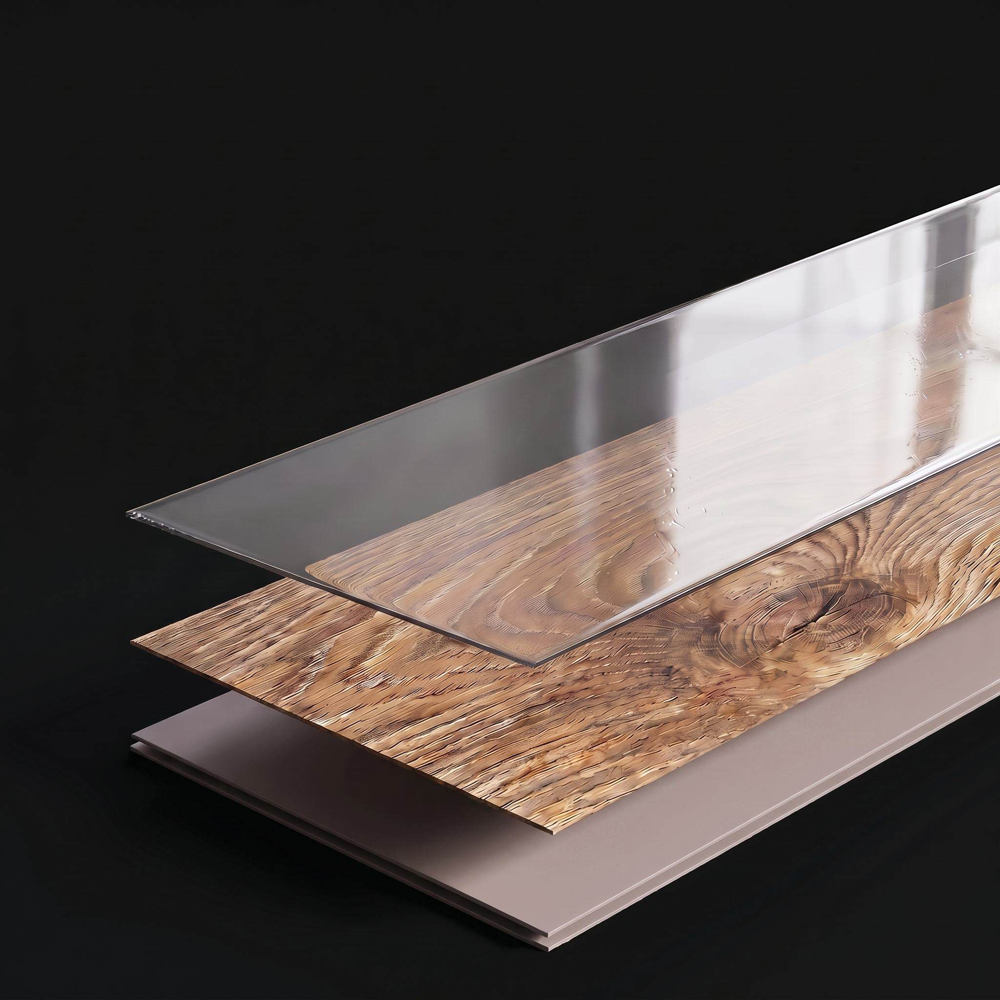
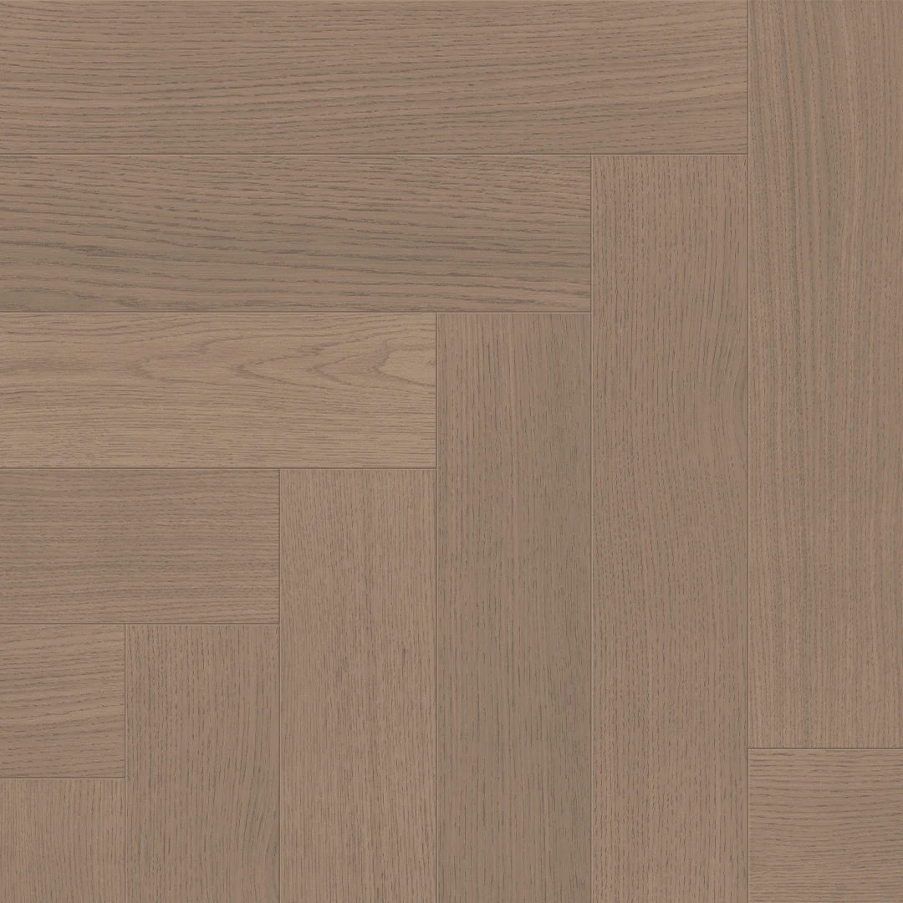

Рынок голосует за SPC
Начнём с результата. В 2025 году участники международной отраслевой ассоциации MMFA продали 85,7 млн м² покрытий SPC — на 26,64% больше, чем годом раньше. За шесть лет доля SPC в их совокупных продажах выросла с 31 до 83%. Технология заняла центральное место в ассортименте участников ассоциации.1
Особенно быстро растёт Северная Америка. Западная Европа остаётся крупнейшим из этих региональных рынков, а Восточная Европа тоже прибавляет. У SPC уже есть масштаб, который измеряется десятками миллионов квадратных метров.
+26,64% за год
- Западная Европа
- 44,2млн м² · +14,95%
- Северная Америка
- 28,5млн м² · +63,99%
- Восточная Европа
- 8,8млн м² · +12,55%
Но как на этой основе оказалось настоящее дерево? Перелистнём несколько лет назад.

Гибрид выходит
в коллекции
В каталоге 2023 года сочетание древесного шпона и SPC уже представлено как товар: указаны размеры, отделка, замковое соединение и варианты верхнего слоя — 0,6 и 1,2 мм.2
У идеи появляется выбор исполнений. Покупатель может искать привычный рисунок дерева, а производитель — подбирать конструкцию под задачу. Так инженерное решение становится частью ассортимента.
У новой категории
появляется имя
19 сентября 2019 года производитель рассказывает о разработке Wood Veneer SPC. За этим названием — понятное сочетание: настоящая древесина сверху и жёсткая композитная основа снизу. В публикации продукт ещё находится на стадии разработки.3
Сама основа к этому времени уже получила место в отраслевой классификации: с ноября 2018 года MMFA выделяет SPC в группе жёстких покрытий Rigid. Две линии развития всё ближе друг к другу: опыт работы с натуральной древесиной встречается с новым поколением несущих плит.4

Самое важное —
между слоями
24 октября 2017 года подана американская заявка, описывающая натуральный шпон на SPC. Она будет опубликована в апреле 2019-го под номером US20190118491A1. Разработчики уделяют внимание подготовке древесины, клеевому соединению и выдержке после склеивания.5
Причина проста: дерево и композит по-разному реагируют на условия вокруг. Поэтому развитие технологии идёт через работу со всей планкой — толщиной шпона, состоянием основы и качеством связи между ними. Именно здесь идея превращается в конструкцию.
Из патентного архива US20190118491A1 · заявка 2017 года, публикация 2019 года
Меньше толщина.
Всё то же дерево.
За два десятилетия до этой патентной заявки на рынок выходит новое поколение шпонированных полов. В 1995 году шведский производитель представляет покрытие с тонким натуральным слоем древесины на отдельной основе.6
Это важный поворот: внешность пола сохраняет дерево, а основную толщину и опору обеспечивает другая плита. Тонкий шпон получает долгую самостоятельную жизнь. В каталоге 2017 года уже прямо указан слой 0,6 мм на HDF-основе.7

Отделка переезжает
на завод
В 1958 году в этой линии развития появляются полы с заводским лаковым покрытием. До этого доски укладывали, шлифовали и лакировали уже на объекте.6
Смысл перемены легко почувствовать и сегодня: готовую поверхность можно рассмотреть ещё до укладки. Оттенок, блеск и прикосновение к дереву становятся частью выбора пола.
Пол становится
конструкцией из слоёв
В Швеции выдан патент на многослойный деревянный пол. Это важная веха в истории современного инженерного паркета.6 В соседних слоях меняют направление древесных волокон, чтобы лучше управлять поведением доски.
За этим решением стоит идея, которая проходит через всю дальнейшую историю: поверхность и несущая часть могут выполнять разные задачи. Сначала это были древесные слои. Позже — тонкий шпон на отдельной плите. Затем к нему присоединилась SPC-основа.